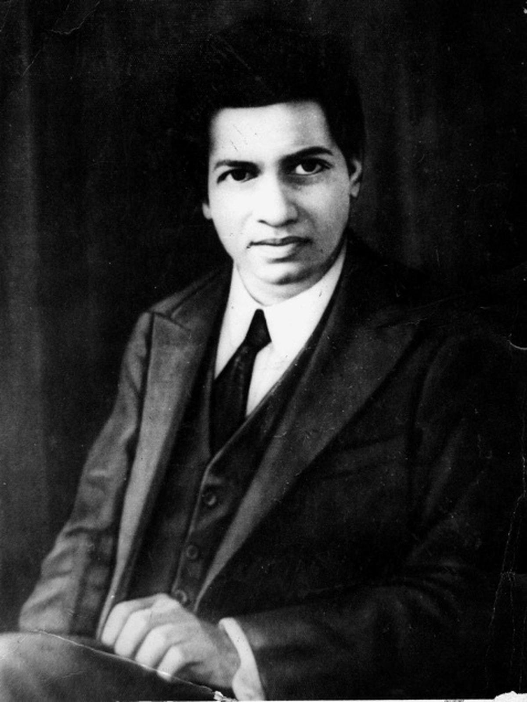

The Man Who Knew Infinity

Srinivasa Ramanujan (1887-1920), the man who reshaped twentieth-century mathematics with his various contributions in several mathematical domains, including mathematical analysis, infinite series, continued fractions, number theory, and game theory is recognized as one of history's greatest mathematicians. Leaving this world at the youthful age of 32, Ramanujan made significant contributions to mathematics that only a few others could match in their lifetime. Surprisingly, he never received any formal mathematics training. Most of his mathematical discoveries were based only on intuition and were ultimately proven correct. With its humble and sometimes difficult start, his life story is just as fascinating as his incredible work. Every year, Ramanujan’s birth anniversary on December 22 is observed as National Mathematics Day.
Born in Erode, Tamil Nadu, India, Ramanujan demonstrated an exceptional intuitive grasp of mathematics at a young age. Despite being a mathematical prodigy, Ramanujan's career did not begin well. He received a college scholarship in 1904, but he quickly lost it by failing in nonmathematical subjects. Another attempt at college in Madras (now Chennai) ended in failure when he failed his First Arts exam. It was around this time that he began his famous notebooks. He drifted through poverty until 1910 when he was interviewed by R. Ramachandra Rao, secretary of the Indian Mathematical Society. Rao was initially sceptical of Ramanujan, but he eventually recognised his abilities and supported him financially.
Srinivasa Ramanujan began developing his theories in mathematics and published his first paper in 1911. He was mentored at Cambridge by GH Hardy, a well-known British mathematician who encouraged him to publish his findings in a number of papers. In 1918, Ramanujan became the second Indian to be included as a Fellow of the Royal Society.
Ramanujan’s major contributions to mathematics:
Ramanujan's contribution extends to mathematical fields such as complex analysis, number theory, infinite series, and continued fractions.
Infinite series for pi: In 1914, Ramanujan found a formula for infinite series for pi, which forms the basis of many algorithms used today. Finding an accurate approximation of π (pi) has been one of the most important challenges in the history of mathematics.
Game theory: Ramanujan discovered a long list of new ideas for solving many challenging mathematical problems that have given great impetus to the development of game theory. His contribution to game theory is purely based on intuition and natural talent and is unmatched to this day.
Mock theta function: He elaborated on the mock theta function, a concept in the field of modular forms of mathematics.
Ramanujan number: 1729 is known as the Ramanujan number which is the sum of the cubes of two numbers 10 and 9.
Circle Method: Ramanujan, along with GH Hardy, invented the circle method which gave the first approximations of the partition of numbers beyond 200. This method contributed significantly to solving the notorious complex problems of the 20th century, such as Waring's conjecture and other additional questions.
Theta Function: Theta function is a special function of several complex variables. German mathematician Carl Gustav Jacob Jacobi invented several closely related theta functions known as Jacobi theta functions. Theta function was studied by extensively Ramanujan who came up with the Ramanujan theta function, that generalizes the form of Jacobi theta functions and also captures general properties. Ramanujan theta function is used to determine the critical dimensions in Bosonic string theory, superstring theory, and M-theory.
Other notable contributions by Ramanujan include hypergeometric series, the Riemann series, the elliptic integrals, the theory of divergent series, and the functional equations of the zeta function.
Mathematical achievements:
In mathematics, there is a distinction between insight and formulating or working through a proof. Ramanujan proposed an abundance of formulae that could be investigated later in depth. G. H. Hardy said that Ramanujan's discoveries are unusually rich and that there is often more to them than initially meets the eye. As a byproduct of his work, new directions of research were opened up. Examples of the most intriguing of these formulae include infinite series for π,In 1918, Hardy and Ramanujan studied the partition function P(n) extensively. They gave a non-convergent asymptotic series that permits exact computation of the number of partitions of an integer. In 1937, Hans Rademacher refined their formula to find an exact convergent series solution to this problem. Ramanujan and Hardy's work in this area gave rise to a powerful new method for finding asymptotic formulae called the circle method.
In the last year of his life, Ramanujan discovered mock theta functions.For many years, these functions were a mystery, but they are now known to be the holomorphic parts of harmonic weak Maass forms.

Commemorative postal stamps:
‘An equation has no meaning for me
unless it expresses a thought of God.’–Srinivas Ramanujan